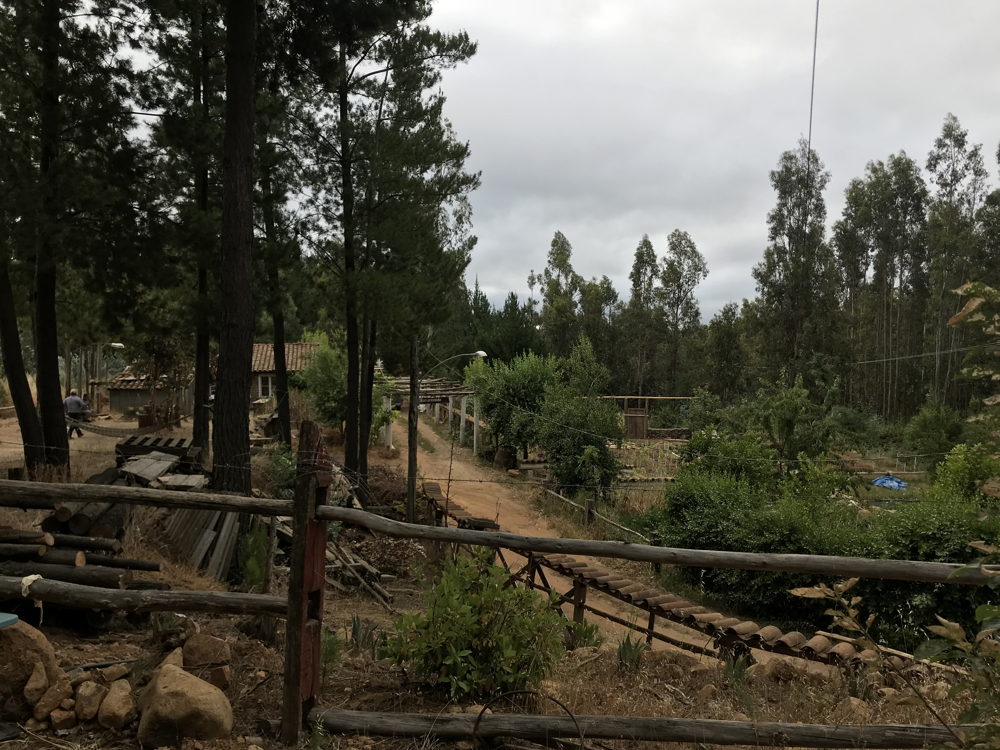
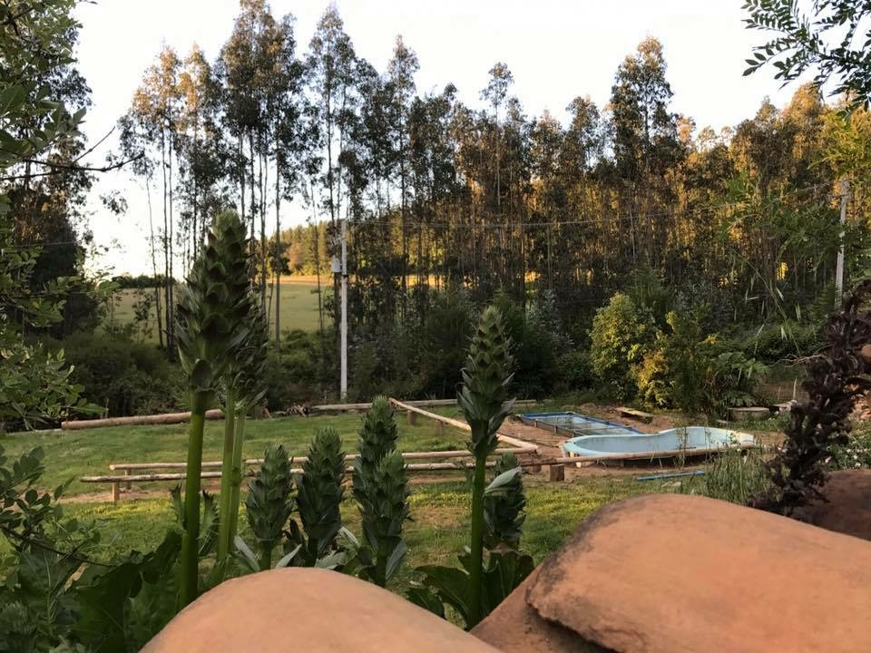
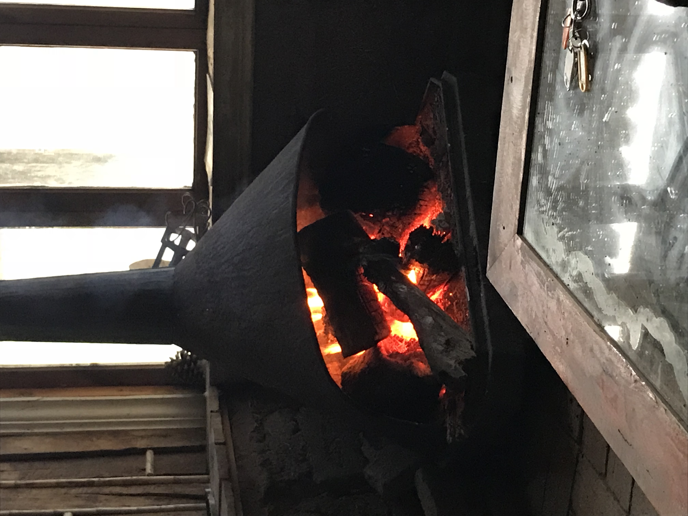

Quincho
Espacio amplio con parrilla y chimenea para disfrutar con familia y amigos, verano e invierno.
- Parrilla a carbón
- Chimenea interior
- Capacidad 20 personas
Proyecto familiar creado por Patricio Rodríguez, construido a pulso con madera, fuego y conversaciones largas.

Espacio amplio con parrilla y chimenea para disfrutar con familia y amigos, verano e invierno.

Mirador para ver el sol caer con una copa, conversar y desconectarse del ruido.

Calor de hogar que acompaña los inviernos fríos y las historias de siempre.
Vida de campo con ritmos propios: cosechar, jugar y compartir.
Vino hecho en casa, pensado para compartir.
De parras familiares y manos conocidas. Notas a frutos rojos, madera suave y tardes de verano.
Postales del rancho: atardeceres, cosechas, fogatas y buenos momentos.